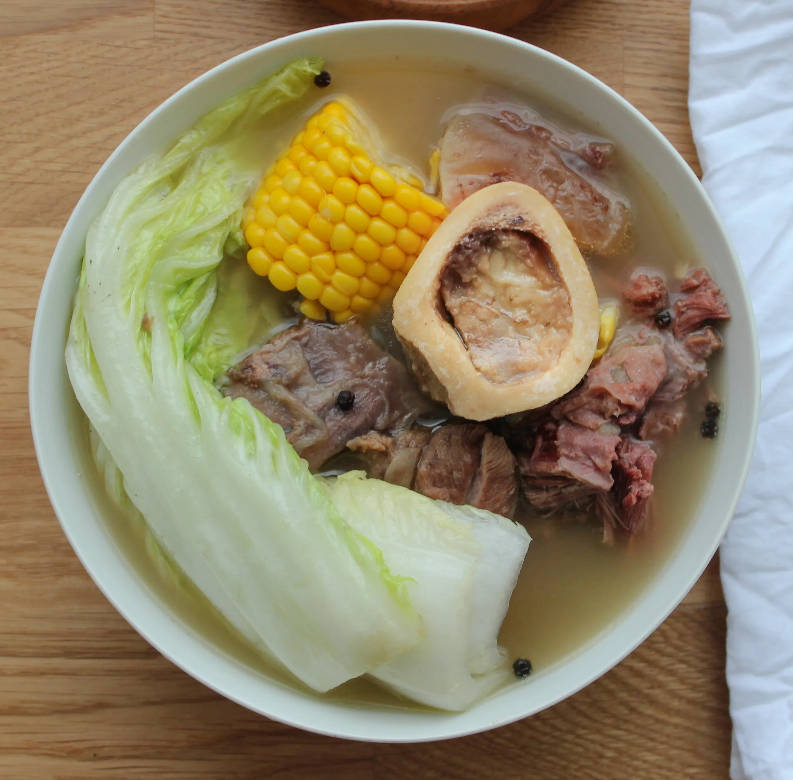

Bulalo

Description
What we have now is Bulalo. Bulalo is one of Filipino's most beloved stew. It has meat in there, very flavorful
bone marrow, amazing taste of soup, and vegetables. Many Filipinos just love eating it after a night out, or for a meal.
Ingredients
- Beef Shank
- Cabbage
- Pechay
- Cobs of corn
- Peppercorn
- Onions
- Dahon Sibuyas
- Fish Sauce
- Water
Directions
- In a pot, pour water and bring to a boil.
- Put the beef shank, and then the onion, whole peppercorn, and then simmer for 1 and 1/2 hours or until meat is tender
- Slice corn into three and then add into the pot. Wait for 10 minutes.
- Add the cabbage, pechay, and dahon sibuyas.
- Add Fish Sauce for taste.
- Serve and Enjoy!